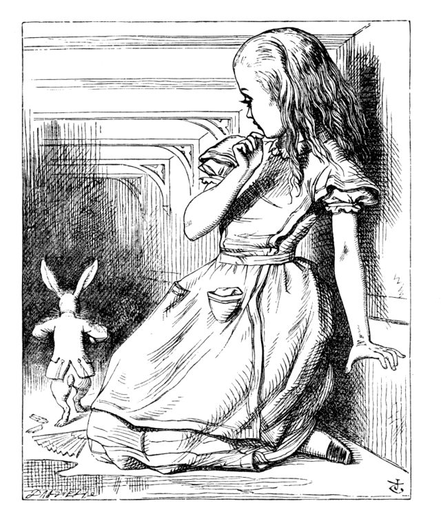

Welcome to Wonderland

Follow Alice into a curious world full of unexpected adventures, strange characters, and wonderful surprises.
Explore the three chapters of this classic story by Lewis Carroll and discover the magical world of Wonderland.
Explore the Story
Choose a chapter from the navigation menu above to begin reading. You can visit any chapter at any time.